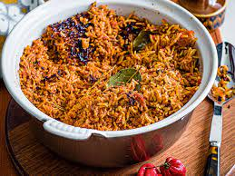

Jollof rice is a delicious royal dish originating in West Africa. It is one of the most common West African dishes eaten in the regions of Nigeria, Ghana, Togo, Senegal, Gambia, Mali, Sierra Leone, Ivory Coast, Cameroun, and Liberia. Although it is believed to have originated from the Wolof people in northwestern Senegal.
This recipe for jollof rice can be customized in many ways to suit your tastes and preferences, you could add any of your favorite vegetables (diced carrots, green beans, sweet peas, or sweet corn).